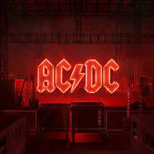

| ACDC | WOS | BADBUNNY | ||
|---|---|---|---|---|
|  |
La música para mi es un espacio, en cual me puedo relajar o divertir,
es como llevarte a un nuevo sitio, cada canción tiene algo unico y te lleva
a lugares diferentes, dejando volar a la imaginación.
Estos artistas son los que escucho con más frecuencia
-Bad bunny me pone a bailar.
-Wos me tranfiere energia y sabiduria.
-Ac Dc me motiva con sus ritmos.